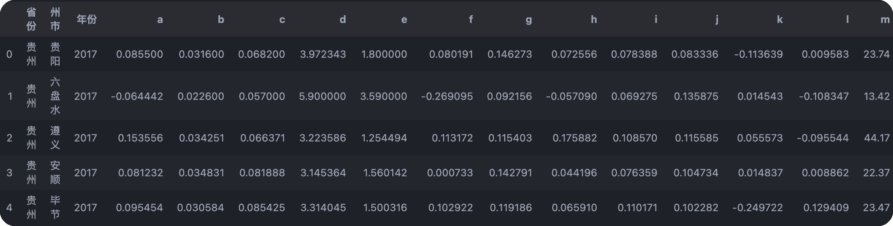
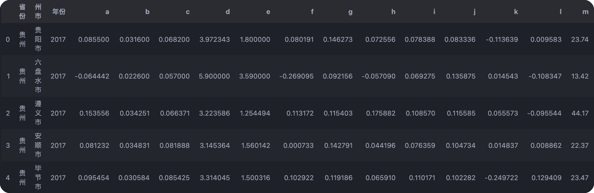
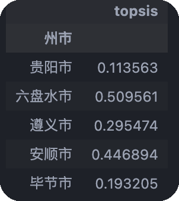
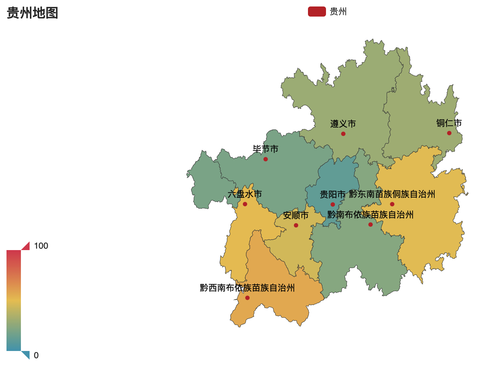

快速开始
示例简介¶
可以通过一个计算区域系统性金融风险的示例，对Rh-s-PyTool进行快速熟悉和大致了解。
假设我们拥有贵州省各州市某年中一系列经济指标的截面数据，现在采用综合指数评分法对截面数据进行计算，得到当年各州市的区域系统性金融风险。（注：所使用数据来源于贵州的统计年鉴，但在本示例中指标的经济意义不重要， 故修改指标名称为字母隐去其实际含义。同时对后续所采用评分方法的适用性不做考量，直接假定它适合本示例。因而本示例仅供参考！！！！）
导入必要模块¶
>>>from cp_lookup import lookup # 区域名处理模块
>>>import index_calmeth.non_dimension as icn # 无量纲化模块
>>>import index_calmeth.weights as icw # 权重计算模块
>>>import index_calmeth.evaluation as ice # 评价打分模块
>>>from pyecharts import options as opts
>>>from pyecharts.charts import Map
>>>import pandas as pd
>>>import numpy as np
导入原始数据¶
查看数据框形状¶
查看数据前五行¶

数据预处理¶
补全州市名称¶
这一步本不是必要，但各个数据平台的数据中有的地区名是简称，有的地区名是全称，例如黔西南、凉山等。这些地区名简称和全称差距不小，为了研究的方便，最好还是统一为全称。

dataframe转ndarray¶
计算过程仅涉及指标数据，暂时无需州市名称、年份等信息，因此暂时排除。同时指标计算部分的模块出于计算效率和数据结构一致性的考虑，没有使用pandas库。通用的数据结构是numpy的ndarray，因此需要将dataframe类数据进行转换。
指标正向化¶
假设第2、4、6、8个指标为逆向指标，由于后续评分函数在设计时假设所有指标为正向指标，因此在这里需要利用tiny_convert函数将非正向指标正向化。
指标归一化¶
后续计算不同指标的权重时，需排除指标量纲的影响，这里使用tonoe函数归一化消除量纲。
正式计算¶
计算指标权重¶
采用基尼系数法求权重。
得到结果¶
利用topsis方法和前面得到的指标权重计算出区域系统性金融风险分值。
>>>result = pd.DataFrame(ice.topsis(df, weights), index=data["州市"], columns=["topsis"])
>>>result.head()

其它¶
利用pyecharts模块对计算结果进行可视化
c = (
Map()
.add("贵州", [list(z) for z in zip(result.index, result["topsis"]*100)], "贵州")
.set_global_opts(
title_opts=opts.TitleOpts(title="贵州地图"), visualmap_opts=opts.VisualMapOpts()
)
.render()
)
